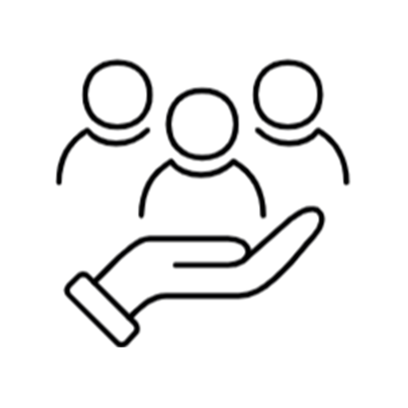
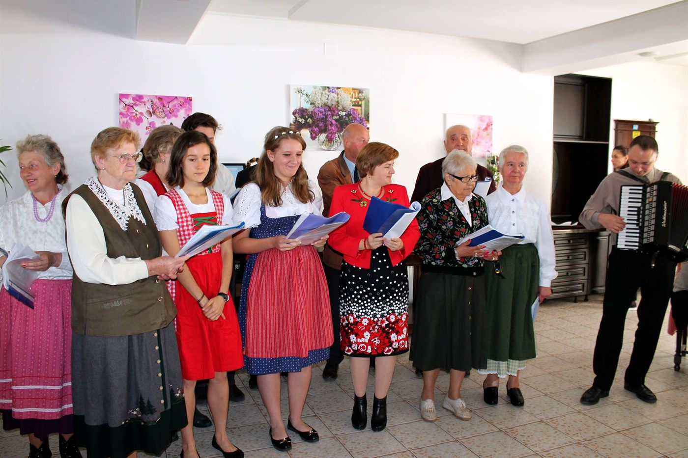
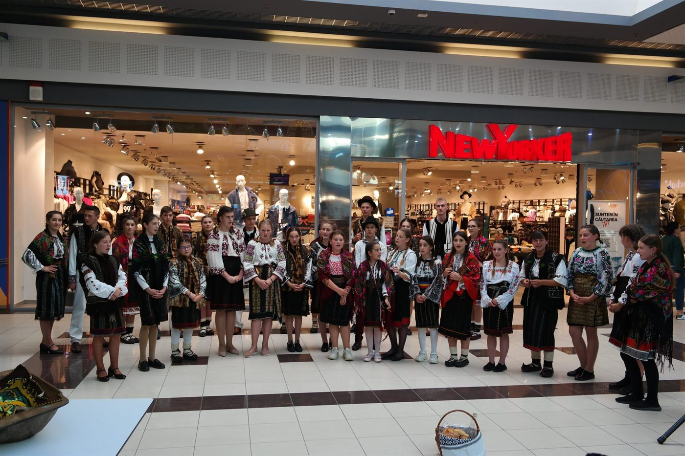

Cronologic, cele mai noi primele
Proiecte
Proiecte cu finanțare nerambursabilă implementate de fundație, ca solicitant sau ca partener.

Eco Feel – Simte ecologic!
Beneficiar: Fundația de Caritate și Întrajutorare „ANA” Suceava · partener: Colegiul Economic „Dimitrie Cantemir” Suceava



INAPP – politici publice alternative
Lider: Fundația de Caritate și Întrajutorare „ANA” Suceava · parteneri: Blocul Național Sindical – filiala Suceava, UGIR – filiala „Bucovina” Suceava
Tabel recapitulativ
| Perioada | Proiect | Finanțator | Rol | Parteneri |
|---|---|---|---|---|
| 2025 | Suceava – monumente și istorie | Consiliul Județean Suceava | solicitant | – |
| 2024–2025 | Eco Feel – Simte ecologic! | Administrația Fondului pentru Mediu | partener | Beneficiar: Fundația de Caritate și Întrajutorare „ANA” Suceava · partener: Colegiul Economic „Dimitrie Cantemir” Suceava |
| 2024–2025 | Mari oameni de cultură ai Bucovinei | Consiliul Județean Suceava | solicitant | – |
| 2024 | Patrimoniul cultural al germanilor din Bucovina | AFCN, sesiunea I/2024 | solicitant | – |
| 2023 | Patrimoniul cultural al huțulilor din Bucovina | AFCN, sesiunea I/2023 | solicitant | – |
| 2023 | Mari domnitori ai Moldovei – lecții de istorie pe frecvențe radio | Consiliul Județean Suceava | solicitant | – |
| 2018–2019 | INAPP – Inițiativa Națională pentru Formularea și Promovarea de Politici Publice Alternative | POCA / Fondul Social European | partener | Lider: Fundația de Caritate și Întrajutorare „ANA” Suceava · parteneri: Blocul Național Sindical – filiala Suceava, UGIR – filiala „Bucovina” Suceava |
| 2018 | Bucovina Centenară – Lecții de istorie pe frecvențe radio | Consiliul Județean Suceava | solicitant | – |
| 2019 | Centenar Suceava – orașul de acum 100 de ani | Consiliul Județean Suceava | solicitant | – |
| 2021 | Evidențierea aspectelor culturale ale comunităților etnice din județul Suceava | Consiliul Județean Suceava | solicitant | – |